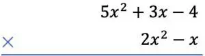
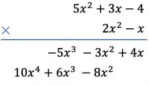

Los monomios son una expresión algebraica, que está formada por combinación de números y letras. Un monomio es cualquier producto de números y variables. Estos son incógnitas variables literales, las cuales solo constan de un solo termino.
Ejemplos:
-2ab2
a3
-5m7
Los binomios:
Los binomios son expresiones algebraicas al igual que los monomios, pero estos están conformados por dos términos, eso significa, que cualquier operación que este formada por suma o resta de dos monomios es un binomio.
Ejemplos:
X2 + 7
2x + 3y
(x + 5) (x + 2)
Los polinomios:
Los polinomios son expresiones algebraicas, que son formadas por la suma de varios monomios o términos finitos. Los polinomios constan de varias operaciones, las cuales son, la suma, la resta y la multiplicación.
La suma de polinomios:
La suma de los polinomios se puede hacer de dos formas, en horizontal o en vertical. En este caso veremos la horizontal:
Suma horizontal:
Para realizar la suma en forma horizontal primero se escribe un polinomio y seguido en la misma línea se pone el otro polinomio que vas a sumar o a restar,
Ejemplo:
Te fijas en los términos semejantes entre los polinomios.
No se puede sumar dos términos que tiene distinto grado, solo se pueden agrupar los que sean semejantes, después de eso se procede a sumar.
La resta de polinomios es el proceso inverso de la suma de polinomios, lo que permite la resta es encontrar la cantidad desconocida que, cuando se suma al sustraendo, da como resultado el minuendo. Esta operación al igual que la suma tiene dos formas de hacerla, la forma vertical y la forma horizontal. En este caso veremos la horizontal.
Ejemplo:
En primer lugar, ponemos un polinomio detrás del otro, en forma de operación algebraica:
( 7x4 + 2x3 + 5x – 4) – ( 4x4 – 3x3 + 8x2 -2x +1)
Los monomios del primer paréntesis permanecen igual, y los términos del segundo paréntesis se cambia de signo, por que tienen un negativo adelante:
7x4 + 2x3 + 5x – 4 - 4x4 + 3x3 - 8x2 +2x -1
Ahora agrupamos los términos con las mismas variables y los mismos exponentes. Si los términos no resultan ser semejantes no se podrían ni sumar ni restar.
Polinomio ordenado de forma descendente respecto a la variable a:
3x4y2 – 2xy + 7y2
Multiplicación de polinomio:
La multiplicación de polinomios también se puede hacer horizontal o vertical, en este caso lo vamos a ver vertical:
Si queremos multiplicar de manera vertical estos polinomios
primero debemos colocar un polinomio debajo del otro de manera que quede como una multiplicación algebraica.

Luego multiplicamos cada termino del polinomio de la parte de abajo por cada termino del polinomio de la parte de arriba y seguimos poniendo el resultado de menor a mayor.

Y por último sumamos los términos que están alineados verticalmente.